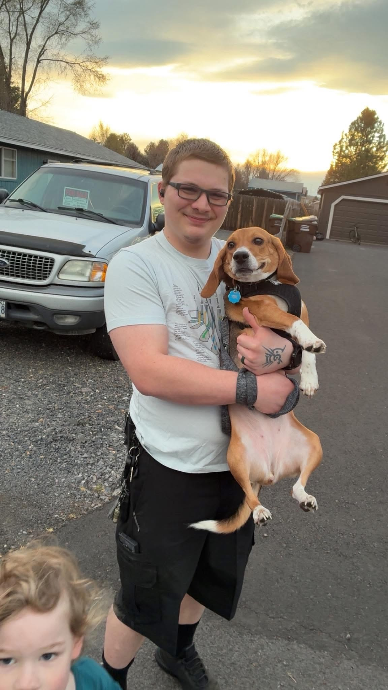

ABOUT THE DEVELOPER
My path into technology wasn't traditional. I spent years working in the fast food industry before discovering a passion for web development, networking, and cybersecurity.
That experience taught me something important: technology should be approachable, understandable, and useful.
Today I build websites for local businesses while continuing to develop my skills in software engineering.
Great websites aren't just beautiful—they help customers find information quickly and take action.
Every project should solve a real problem, whether that's attracting new customers or improving a learning experience.
Technology changes constantly, and I'm always learning new skills, tools, and techniques to improve my work.

When I'm not building websites, I'm studying, cooking, hanging out with my beagle, or getting distracted by a new science topic I had absolutely no intention of learning.